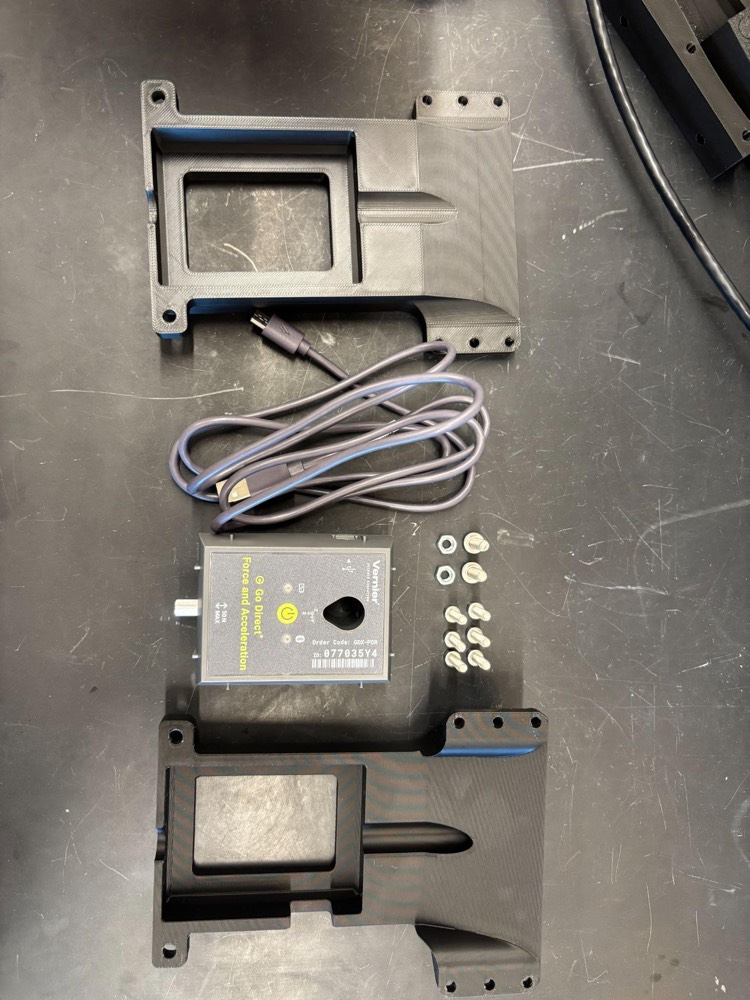
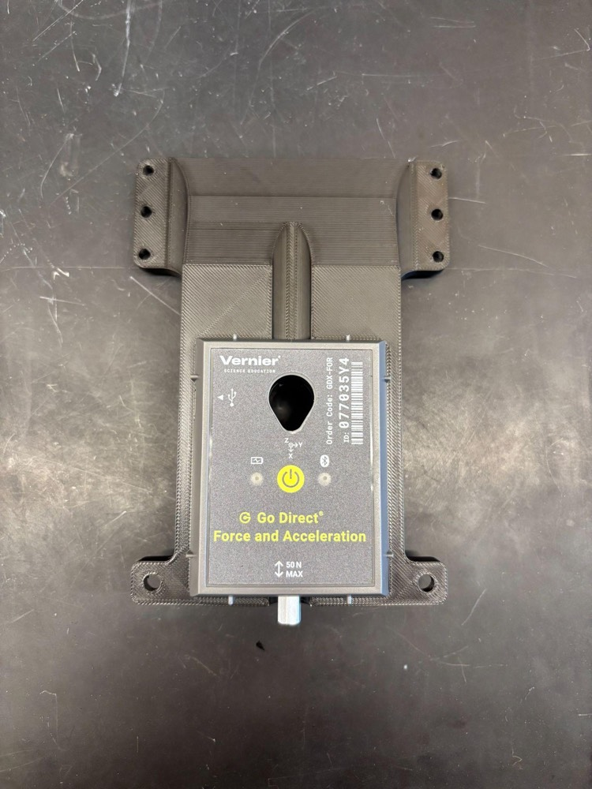
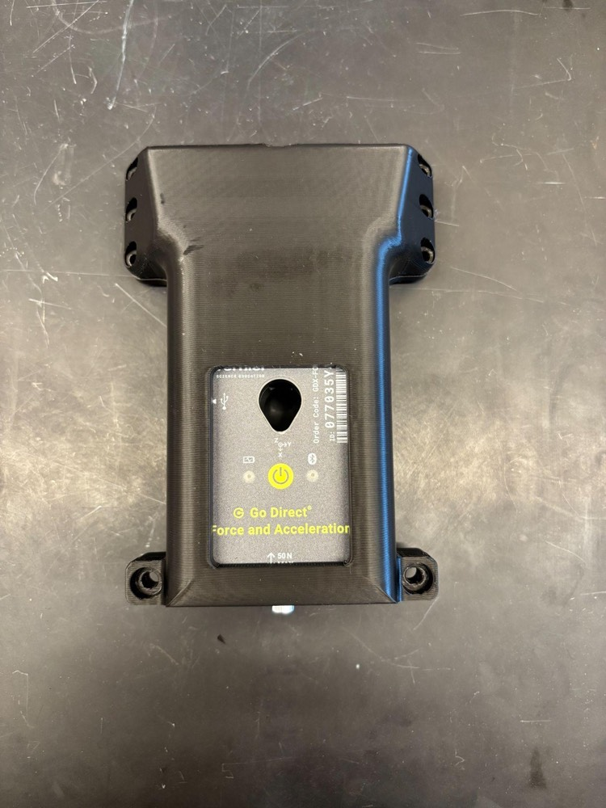
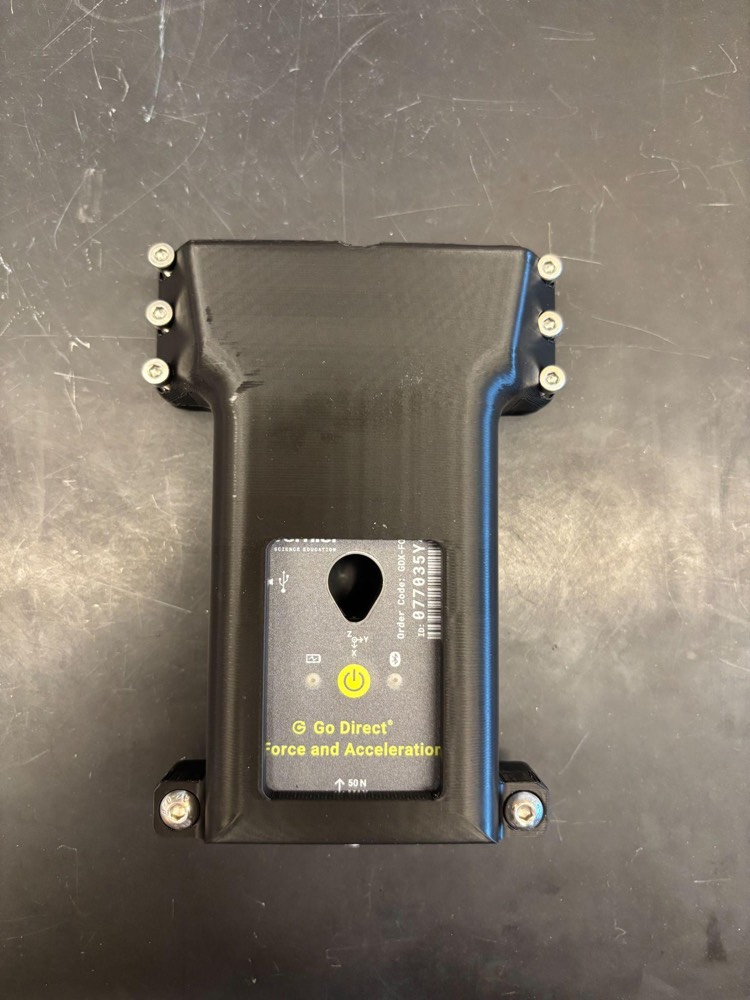
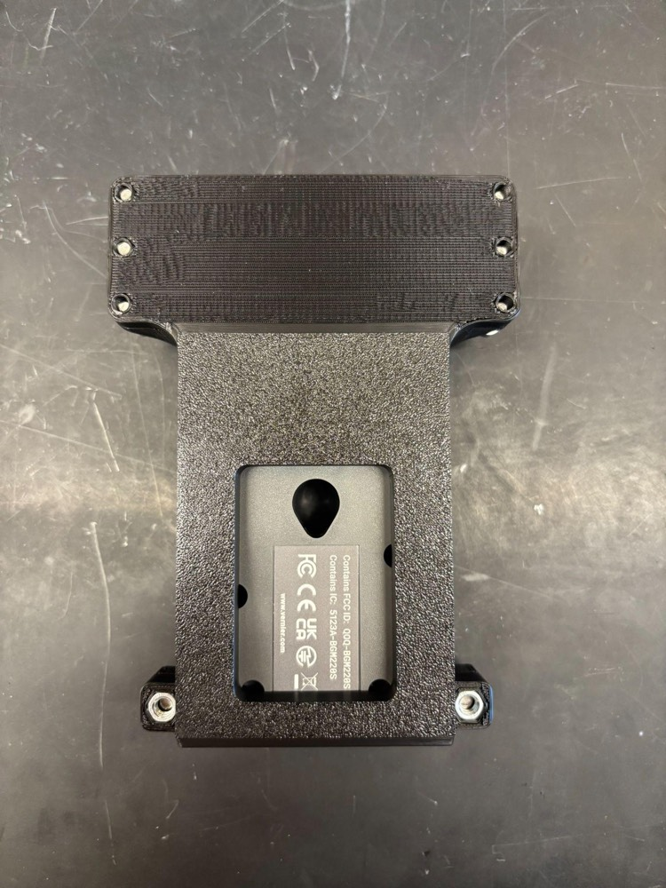
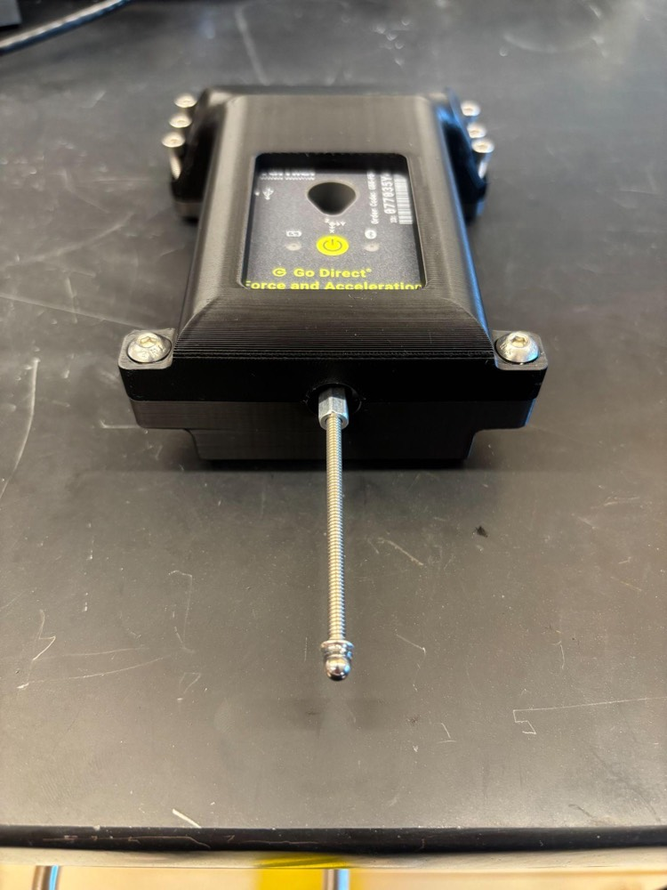
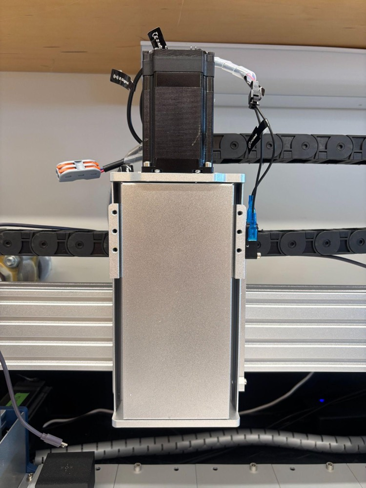
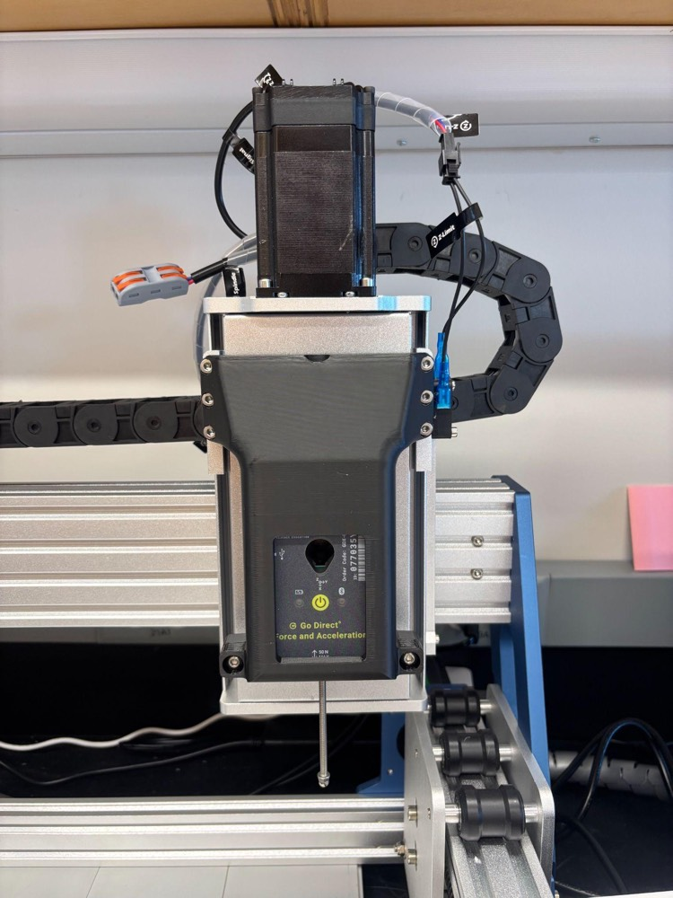
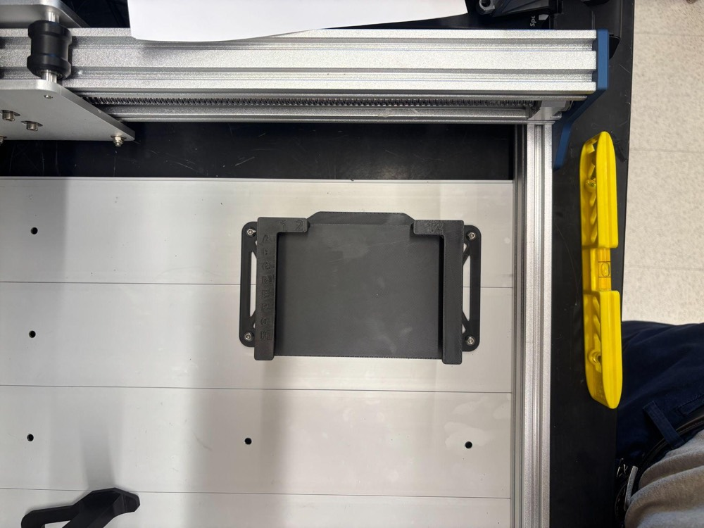
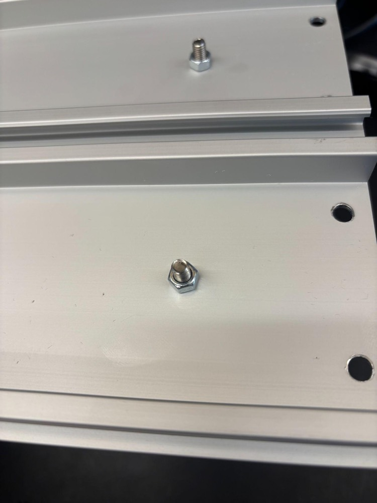

Part B of 6 · CubXL + ASMI
Mount the ASMI force sensor and plate holder
Clamp the Vernier force sensor in its printed mount, bolt it to the X-axis carriage, and fit the 96-well plate holder to the bed.
What you need
- Vernier Go Direct Force and Acceleration Sensor and its cable (Vernier)
- A 3 mm or 5 mm ball indenter
- Printed parts: CubXL Vernier Go Direct mount (base and cover) and CubXL ASMI wellplate holder (files in Cubware, preview in the CAD viewer)
- 6× M4 × 16 mm socket-head screws, 6× M5 × 15 mm button-head screws, 6× M5 hex nuts
- 3 mm Allen wrench
The sensor mount bolts straight onto six holes on the X-axis carriage. The plate holder bolts through the bed.
Steps
1Print the parts
Print the mount base, mount cover and wellplate holder in PLA. Default settings work; turn supports on for the overhangs (tree supports, Tree Slim style, 30° threshold). Our reference prints used a Bambu Lab X1-Carbon with Bambu PLA Basic.

2Seat the sensor in the base
Set the sensor into the rectangular opening in the back half of the mount, oriented as shown.

3Fit the cover
Place the cover over the sensor and base.

4Clamp the sensor
Drop the six M4 × 16 mm socket-head screws into the six holes above the sensor (they'll bolt the mount to the gantry in step 6). Push two M5 × 15 mm button-head screws through the two holes below the sensor, put two M5 nuts in the hex pockets on the back, and tighten with the 3 mm Allen wrench until the sensor is clamped.


5Fit the indenter
Screw the 3 mm or 5 mm ball indenter into the sensor. Finger-tight is enough.

6Bolt the mount to the X-axis carriage
Line up the six M4 screws with the six holes on the X-axis carriage and tighten them with the 3 mm Allen wrench until snug. Plug the cable into the side of the sensor, leaving enough slack for the full travel.


7Fit the wellplate holder
Set the ASMI wellplate holder on the bed where you want your plate, with its four holes over four holes in the baseplate. Push four M5 × 15 mm button-head screws through from above and tighten four M5 nuts from underneath until it doesn't move.


Check your work
- The sensor doesn't shift in the mount when you press on the indenter.
- All six M4 screws are tight and the mount doesn't rock on the carriage.
- The plate holder is bolted down and doesn't move.
- The sensor cable is plugged in and has slack across the whole travel.